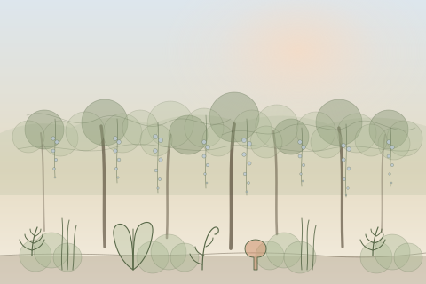
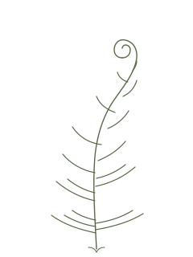

A breath to think with more complexity.
1:1 leadership coaching for adults navigating career and life transitions — grounded in adult-development research, paced like a walk.
Floor, understory, canopy — small experiments that build new habits without overwhelming the system.
Notice what's already true.
We start with what's right in front of you. No fixing, no reframing. Just attention.
Try one small thing.
A single, specific experiment between sessions — sized so you can actually do it during a busy week.
See what shifts.
We return, name what got easier, and let the next step come into view. Growth happens in stages, not leaps.
What does the version of you who already figured this out know?
"She doesn't tell me what to do. She helps me hear myself more clearly — and then I know what to do."
— Director, mid-career transition
Adults in the middle of a real change.
You're not stuck — you're between. A new role, a new chapter, a quiet question that won't go away. Ilex Garden is where you bring it, and where you start to move.
A 30-minute discovery call.
We talk. You bring whatever's on your mind. By the end, you'll know whether this is the right fit — and so will I.
Begin a session →